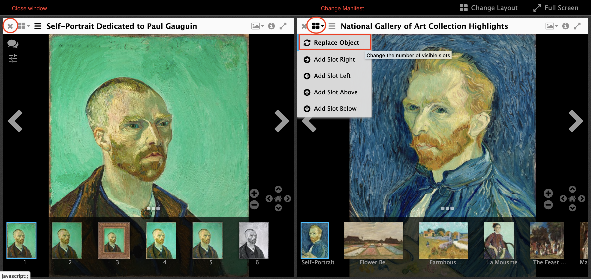
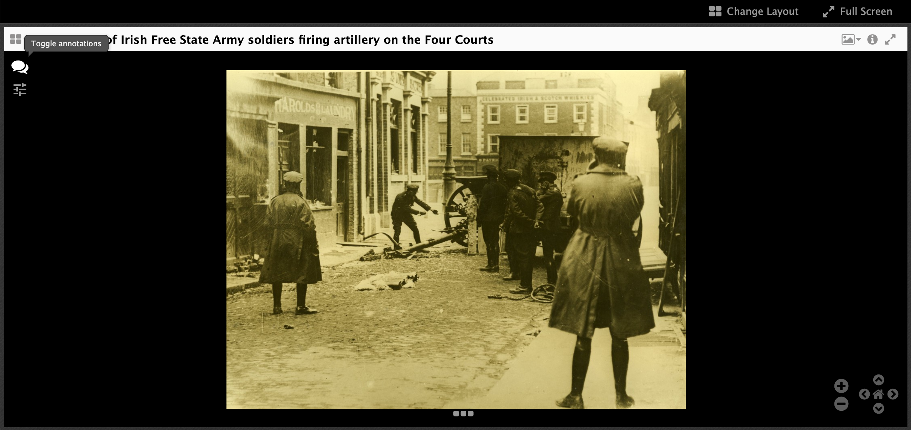
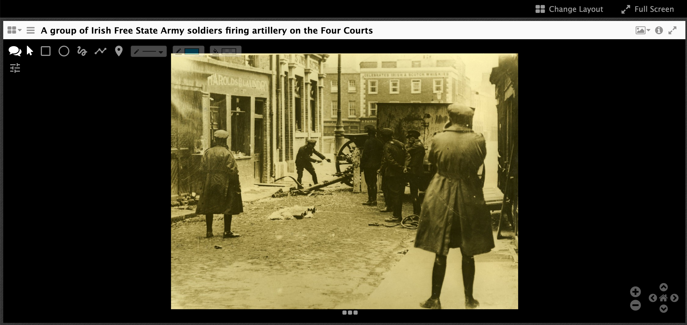
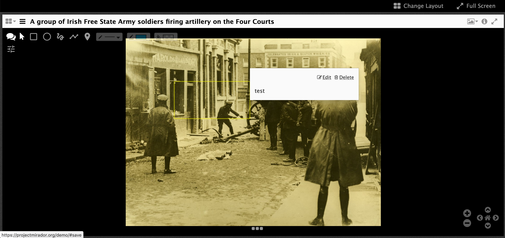

Annotation Exercises
Annotations through Mirador:
Step 1:
Step 2 - Navigating with Mirador:
- Click 'Try a live demo'
Mirador commands:

- Select a Manifest by clicking on one of the Rows:

- Or add your own manifest in the 'Add new object from URL'
Step 3 - Start annotating:
- Click the speech bubble on the top left

- Lots of options:

From left to right the buttons are:
- Speech bubble - hide annotation buttons
- Pointer - to select existing annotations and change the size or edit the content
- Rectangle - Draw a rectangle annotation
- Oval - Draw a Oval annotation
- Freeform - Go free style with the shape of the annotation
- Ploygon - Create a shape with straight sides
- Pin - Drop a pin as the target of the annotation
- Thickness - change the thickness of the shape's line
- Line colour - change the colour of the shape's line
Fill - fill the shape with a colour.
Once you have drawn a shape on the image you get a box where you can add content for the annotation.
Again you have more buttons to choose from and these are to format the content of the annotation:
- Make the text bold
- Make the text italics
- Insert a link
- Insert an image
- Insert a video or audio file
- Clear formatting
- and change orientation of the text (left/right or right/left)
To format the text with bold or italics, type of your text then highlight it and click the bold or italics button.
Once you have added some text click save. You can also add a tag if you like.
You will then see a box appear and if you put your mouse over the box you will see the text you entered:

Take 5 minutes to play around creating annotations so you get a feel for how it works. Also think on the following questions:
- What type of project would this be useful for?
- What might it not work so well with?
Where are these images stored?
This version of Mirador stores the annotations in the browser local storage. This means:
- They are only accessible on your machine
- They are not permanent and may disappear
- Its the perfect storage location for a demo site
How do we make these annotations more permanent?
With an Annotation Store.